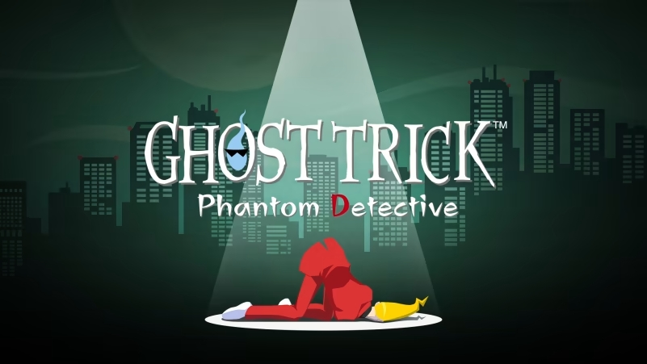

Ghost Trick: Phantom Detective

- Chapter 1: 7:02 PM
- Chapter 2: 7:31 PM
- Chapter 3: 8:04 PM
- Chapter 4: 8:23 PM
- Chapter 5: 8:34 PM
- Chapter 6: 9:03 PM
- Chapter 7: 10:05 PM
- Chapter 8: 10:55 PM
- Chapter 9: 11:13 PM
- Chapter 10: 11:41 PM
- Chapter 11: 12:10 AM
- Chapter 12: 12:25 AM
- Chapter 13: 12:51 AM
- Chapter 14: 1:28 AM
- Chapter 15: 2:55 AM
- Chapter 16: 4:19 AM
- Chapter 17: 5:10 AM
- Final Chapter